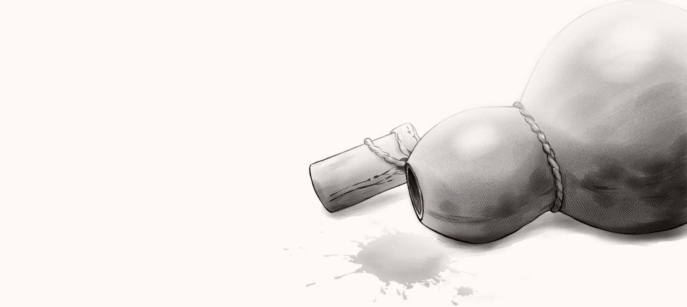

CHIVEY

"Out of my way, thou cowardly son of a jackal!"
A kick to the gut flipped her onto her back. A short, stocky sailor stepped over her and headed for the mainmast. Emmy curled into a ball. Her breath was gone. She grabbed the nearest shroud and pulled herself to her feet, bent forward with her palms on her knees, mouth open, pulling at the air.
Her breath came back as Emmy watched the sailor go, her eyes narrowing as a cold spark crossed them. She launched herself at the sailor and jumped on his back. Her teeth sank into his sinewy neck.
"Off me, whelp!"
He threw her off with one motion of his arm. Paying her no further attention, he walked to the center of the deck.
"Jope! Captain Jope!"
He thrust his red beard upward, eyes fixed on the forecastle, then pulled a pistol from his belt, fired it into the sky, and tossed it aside. The prisoners scattered in all directions, dropping their work. Sailors from both ships drifted slowly onto the deck and gathered in small clusters.
Emmy crawled to the mast and leaned against it.
"John Colyn Jope! Captain Jope! Hearest thou me?!"
Up on the forecastle, beside the carved figure in gilded armor, Jope's silhouette appeared. He leaned on the rail and tilted his head down. Redbeard clenched his fists and planted his legs wide, one shoulder thrust forward.
"This ship is empty! There is naught within... nothing but dead water and worm-eaten biscuit. Look upon them — they be but walking skeletons!"
He thrust his arm out toward the prisoners, finger pointing.
"Thou didst promise us rich plunder, coin, and silks! But here is naught but pestilential air and a few score pieces of half-dead blackamoors! For what? For what have we risked our skins?!"
He turned to the sailors, sweeping them all with a heavy stare.
"My brother is dead! He lies yonder, upon the White Lion, drowned in his own blood… And is this our reward?! Tell me — is this all we have earned?"
There was movement on the forecastle as Captain Elfrith appeared behind Jope. His hand rested on Jope's shoulder as he watched the scene below with a thin, poisonous smile.
That golden down on his cheeks. Visible even from here... How can beauty be so poisonous?
Emmy looked away from the captains and went back to watching Redbeard.
He turned back to the captains again, shaking his fist at the sky.
"And is this our reward?! Rotting corpses?! Damn ye all to hell!"
A rumble of approval rolled across the deck like a wave. Angry shouts broke from the crowd.
"Vengeance! I demand vengeance!"
Redbeard looked around him. The crowd answered with noise.
Elfrith pulled a dueling pistol from his belt, cocked the hammer, pushed the set trigger forward with his index finger, then took Jope by the hand and placed the pistol in his palm.
A shot rang out. A white cloud of smoke hid both captains for a moment.
Redbeard staggered. He clutched his chest. Took a few steps back and fell heavily onto his back. The ship went silent. Jope spat. He swept his gaze across the crowd. Spotting his bosun, he gestured for him to come closer.
"Goods are goods enough. Choose from among the blackamoors the strongest, those not struck down by fever. See that their skin be not marred by rot. Divide them equally, men and women alike. Half to White Lion, half to Treasurer. Gather all provisions and weapons. We weigh anchor."
Captain Elfrith put his arm around Jope's waist. Laughing quietly, he drew him away into the forecastle.
"Why stand ye there like blocks? All hands below!" The bosun pointed at the prisoners. "Heave these into the hold. Gather what provisions be fit, and have them brought on deck."
As the deck emptied, Emmy sat by the mast and looked at Redbeard. Step by step, crouching, she moved up close to him, where he lay with his arms spread wide, his open eyes looking up at the sky.
"I'm sorry. I truly am sorry it came to this..."
Emmy looked into his face, the clear sky reflected in his blue eyes and making them seem bottomless. She picked the debris from his beard.
"Forgive me for biting you. But you kicked me first."
She licked her dry lips.
How thirsty I am... I'd give my soul for a sip of water.
She looked at Redbeard.
"Do you have any water? Can you spare some?"
She looked over his clothing and spotted a small gourd, darkened with age, hanging at his belt; untying the leather strap, she shook it, heard a thick slosh of liquid inside, pulled the stopper, and drank half in one go.
Her breath seized.
The sharp liquid scorched her mouth. She coughed. Heat hit her throat and spread through her entire body. Her head grew heavy. Emmy dropped the gourd from her hands. A thin dark liquid ran along the boards, mixing with Redbeard's blood.
Her heart hammered wildly in her chest. The sky shuddered. Through it appeared the even rows of tiny dark holes in the white panels of a hospital ceiling. The fluorescent lamp above her head flickered and blazed with bright, warm light.
Then it passed all at once. A soft bliss spread through her body, pulling her lips into a foolish smile. Her eyes brightened as she straightened Redbeard's arm and laid her head on it, pressing close and holding him.
"Look at me. You're not angry with me, are you?"
She turned his head toward her and ran her fingertips along his beard, looking into his eyes.
"What do you see? Does it hurt anymore? Do you feel bliss?"
Emmy pressed her finger against his lower lip, revealing his sparse bottom teeth and the thin trickle of saliva and blood running from the corner of his mouth.
"Do you see him? Your brother?"
Redbeard looked into her eyes in silence. A large, fat blowfly landed on his face. It ran across his pupil and settled on his nose, busily rubbing its emerald abdomen with its legs.
"You again. Get away from him! Shoo!" Emmy rested her head against the sailor's shoulder. "I won't let anyone hurt you..."
She looked up at the sky. High above her, on the battered mast, a flag hung trapped in the rigging — tangled in the lines, unable to pull free. The mast swayed from side to side, its broken yards sweeping wide, as if inviting her onto some cheerful fairground ride.
Her eyes lit up. She turned her head toward Redbeard.
"You know, I found your reward. I'll bring it to you, trust me."
Emmy sat up. Carefully turned the sailor's head to face upward.
"Don't go anywhere. I'll be right back. I just need to borrow something..."
She kissed him on the lips.
A faint ringing in her ears made her go still. The ship shuddered. The deck shuddered as the dark planks shifted and parted, exposing the white-tiled floor beneath, the ringing in her ears growing louder into a heavy pulse at her temples before the deck shuddered again and the planks, with a dull groan, shifted back into place.
Emmy moved quickly, unlatching the brass buckle of Redbeard's belt and pulling it free as the sheath with its broad knife slapped heavily against her hip, then threaded the belt through the buckle, cinched it around her waist, and tied the loose end in a clumsy knot. Emmy cupped Redbeard's face in her palms and pressed her forehead to his.
"Hold on. Don't disappear... Wait for me..."
She jumped to her feet. Ignoring the sharp splinters on the deck, she ran to the nearest shrouds. A tarred ratline bit into her bare sole.
The sea and wind swung the shrouds, but Emmy kept climbing stubbornly. Gripping the ropes and tangling her feet in the ratlines, she pulled herself higher and higher; when her foot missed a ratline and hung in empty air. Emmy froze. She looked down, her legs began to shake, and she pressed herself into the rigging as cold sweat broke out on her forehead.
The surface of the sea heaved and breathed as three ships slept pressed against each other, the deck had grown small, and the sailor's body still lay there with arms spread wide.
"There's your reward!" she shouted down, pointing at the flag.
At the ship's bow she spotted the two captains; Jope was waving at her, gesturing for her to come down, but she shook her head.
No. I made a promise...
She looked up; the flag was still a long way off — a dark shape against the noon sun, drifting in and out of its glare. She kept climbing.
What had looked small from below turned out to be vast and heavy. A broken line had looped around the flag and pulled tight in a knot. Pressing her whole body against the mast, Emmy worked at it with her fingers — but her nails only sank into the sticky tar. She drew the knife from her belt and began sawing at the rope. The half-cut strands snapped under the tension, and the line whipped back, catching her hard across the arm.
The flag tore free. The wind caught the cloth and threw it open. On the white banner blazed a jagged blood-red saltire.
That thing is the size of a room. But I made a promise...
Emmy reached out; the upper line was cut, and without it the flag lost its shape, the cloth falling in heavy folds.
Good. One more to go.
The knife was nearly through the second line when a sudden gust caught the cloth and wrenched it sideways, and Emmy let go of the mast and grabbed the flag with both hands. It plunged. The deck rushed up. Jope’s looming figure sprinted toward the mast.
Everything growing fast, the angle shifting in an instant. A hard strike against the surviving yard drove through her body like a spike.
The crack of ribs broke the silence.
The dead sailor opened his arms to receive her. The planking and his face filled the world.
"I have you — I have you!"
Dr. Harper caught her in his arms. The fluorescent lights twitched and hummed in the hospital corridor.